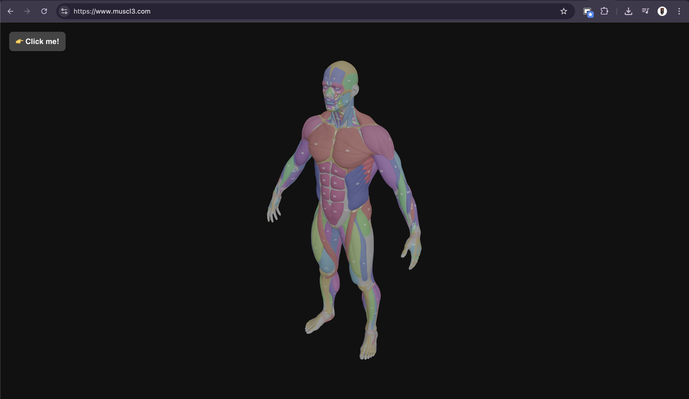

muscl3
3D Interactive Muscle Explorer
A 3D muscle anatomy explorer built using React, Vite, and Supabase. Users can interact with a human model to learn about muscles and view targeted exercise videos pulled from YouTube. Built for intuitive and educational gym discovery.
React
Vite
Supabase
3D Graphics